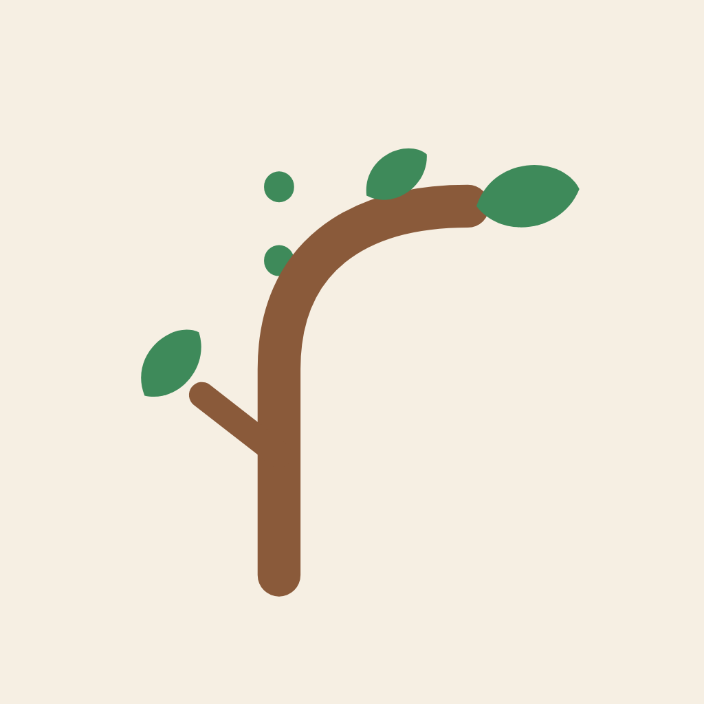
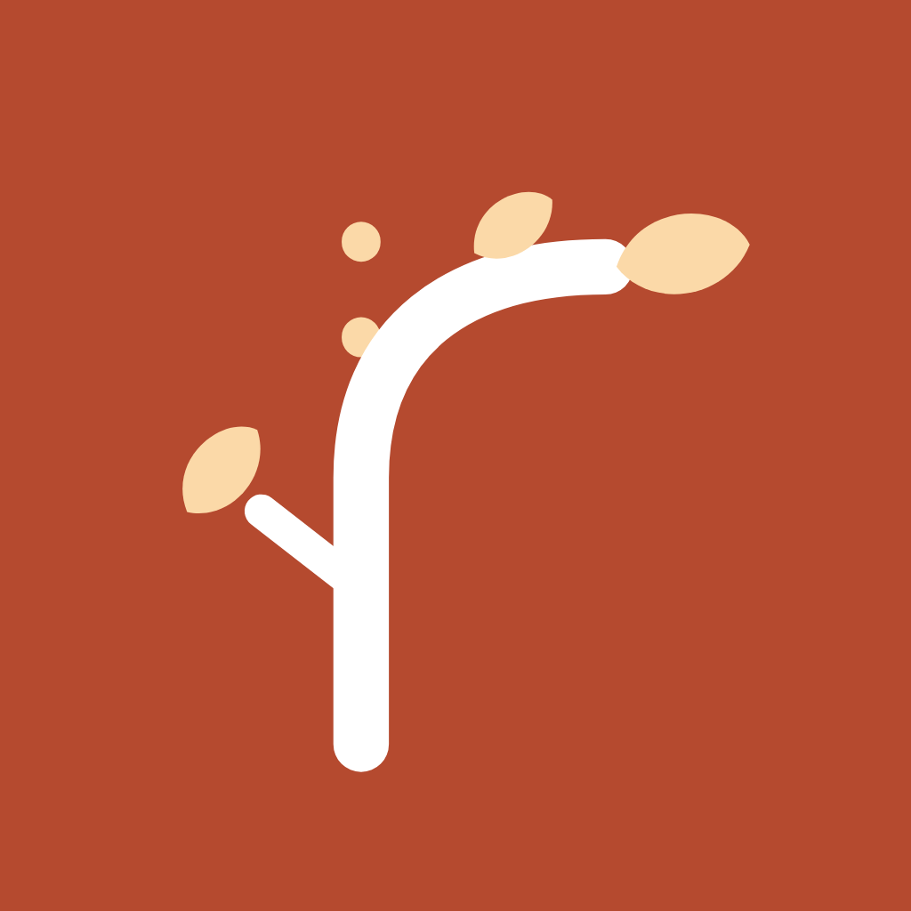
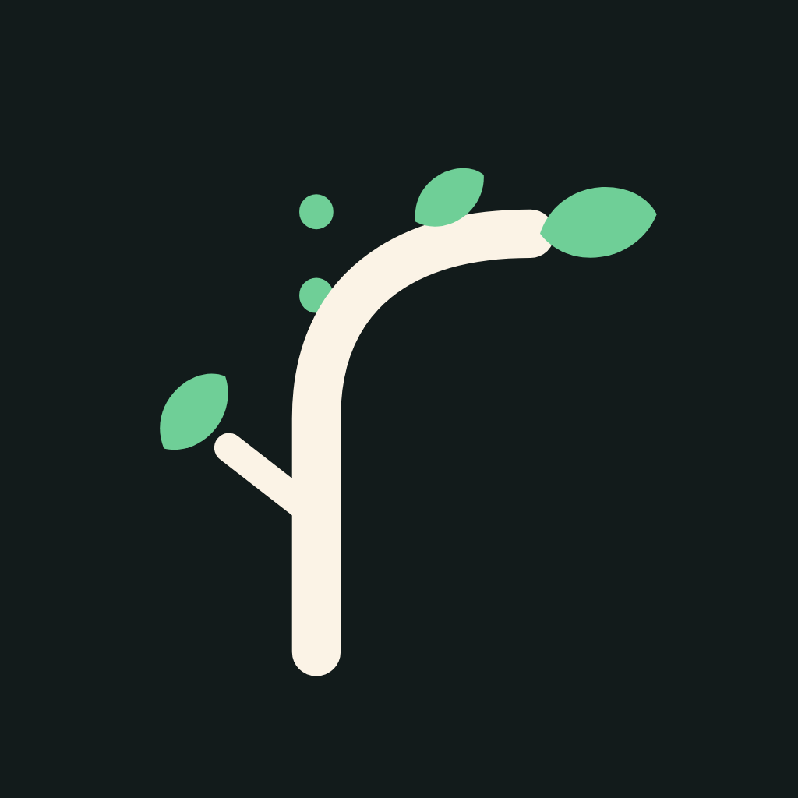
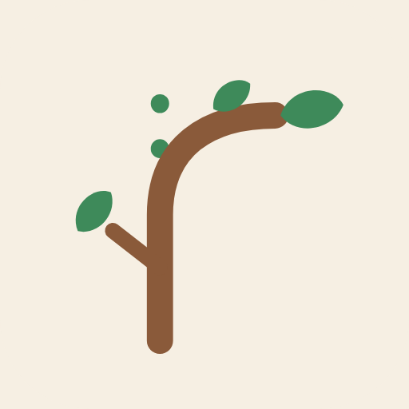
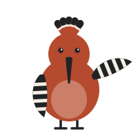
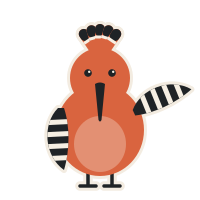
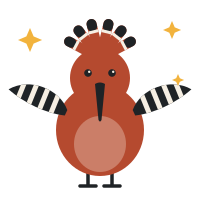

The Rahyaab design files in this repository, shown live. Everything here reads from design/tokens/tokens.css and the SVGs in design/brand, so it updates when those files change. Use the button to switch between light and dark.
Logo
App icons




Mascot: Hudhud
Each pose has a light and a dark file; this page swaps them with the theme.


Default, hero, onboarding


While the student plays; calm


After a surprising choice


Short waits, model updating


Explore, course pages


Home, weekly recap


Offline, waiting for parent consent


First launch, back after a break


Blueprint reveal only


Delivers the Blueprint, notifications
Colour tokens
Swatches show the current theme. The codes show light / dark.
bg
#F6EFE3 / #121B1Bsurface
#FFFFFF / #1B2626sunken
#EDE3D3 / #233131border
#DDD0BC / #2F3E3Etext
#1F2326 / #F3ECE1muted
#5A5650 / #A9B3AEprimary
#B54A2F / #E07A5Con-primary
#FFFFFF / #121B1Bprimary-text
#A2401F / #F0957Asecondary
#1F7A7A / #4FB3AEon-secondary
#FFFFFF / #121B1Bsecondary-text
#17696A / #6FCBC5accent
#F2B33D / #F2B33Don-accent
#1F2326 / #121B1Bsuccess
#2E7A52 / #6FCF97danger
#B42318 / #FF8A80focus
#1F7A7A / #6FCBC5logo-twig
#8A5A3A / #FBF3E6logo-leaf
#3E8A5A / #6FCF97mascot-body
#B54A2F / #D9643Fmascot-ink
#1F2326 / #1F2326mascot-light
#F6EFE3 / #F6EFE3mascot-outline
#F6EFE3 / #F3ECE1Type
display-xl · 40px/44pxPlay your year.
display-l · 32px/36pxWeek 2
heading · 24px/30pxThe robot keeps drifting left.
title · 18px/24pxPre-Engineering
body-l · 17px/26pxEvery choice tells us something. None of them is wrong.
body · 15px/22pxBased on 4 weeks of play.
label · 14px/20pxStart week 2
caption · 12px/16pxDIL · DUNIYA
urdu-body · 18px/34pxاپنی راہ، اپنی کہانی
Components
Dil"Let me open it up."
Duniya"Split the team."
Full specs: design/specs/components.md.
Responsive check
The same Home screen (home.html) at four device widths. Open it directly and resize the browser to see it adapt.